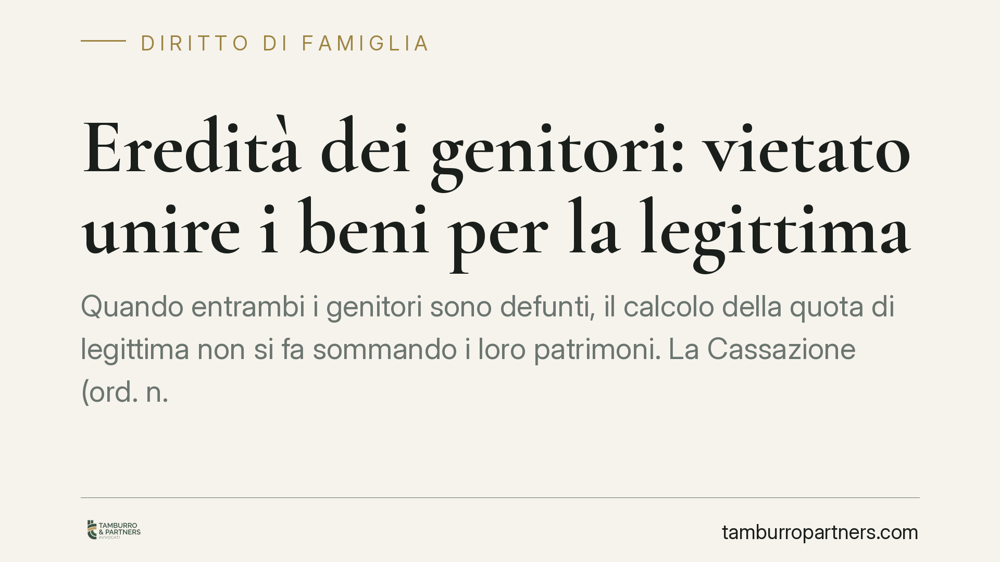

Eredità dei genitori: vietato unire i beni per la legittima
Quando entrambi i genitori sono defunti, il calcolo della quota di legittima non si fa sommando i loro patrimoni. La Cassazione (ord. n. 24242/2026) ribadisce un principio chiaro: ogni successione fa storia a sé. Due masse ereditarie distinte, due riunioni fittizie, due quote di riserva da verificare. Una precisazione decisiva nelle liti tra fratelli sull'eredità familiare.

Il caso
Il contenzioso riguarda una situazione frequente: alla morte di entrambi i genitori, uno o più figli lamentano di aver ricevuto meno di quanto spetta loro per legge. In particolare, contestano donazioni o disposizioni testamentarie che avrebbero ridotto la loro quota di legittima, ossia la porzione di eredità che la legge riserva ai parenti più stretti e che il defunto non può liberamente togliere.
La questione sottoposta alla Seconda Sezione Civile era tecnica ma dalle conseguenze pratiche enormi: per verificare se un figlio è stato leso, i patrimoni dei due genitori vanno considerati insieme oppure separatamente?
Inquadramento normativo
La risposta della Corte è netta: i patrimoni restano distinti. Si tratta di due successioni autonome, ciascuna con regole proprie.
Il Codice Civile fissa le quote di riserva agli articoli 537 e 542. L'art. 537 disciplina la riserva a favore dei figli; l'art. 542 interviene quando concorrono figli e coniuge. Queste quote si calcolano, caso per caso, sul patrimonio del singolo genitore defunto.
Il passaggio chiave è l'art. 556 c.c., che regola la cosiddetta riunione fittizia. È un'operazione contabile, non un'effettiva unione di beni: si somma il valore dei beni lasciati alla morte (il cosiddetto *relictum*) con il valore di quanto il defunto aveva donato in vita (il *donatum*). Su questo totale si calcola la quota di legittima spettante a ciascun erede.
La Cassazione precisa che questa operazione va eseguita separatamente per ciascuna successione. Il patrimonio del padre genera una propria massa di calcolo; quello della madre ne genera un'altra, del tutto indipendente. Non esiste una "massa unica" dei genitori.
Perché la distinzione conta
La differenza non è teorica. Immaginiamo un figlio che abbia ricevuto una donazione consistente dal padre, ma nulla dalla madre. Se si sommassero i due patrimoni, quella donazione potrebbe risultare "compensata" dalla minore attribuzione materna, con il rischio di falsare il conteggio.
Tenendo le successioni separate, invece, ogni attribuzione viene imputata alla successione da cui proviene. La donazione del padre pesa solo sul calcolo relativo al padre. La quota di riserva viene verificata due volte, in modo autonomo.
Questo può portare a esiti differenti: un erede potrebbe risultare pienamente soddisfatto in una successione e leso nell'altra. L'azione di riduzione — lo strumento con cui il legittimario fa valere la lesione della propria quota — andrà quindi calibrata su ciascuna massa.
Implicazioni pratiche per gli eredi
Per chi si trova in una lite tra fratelli, il principio incide direttamente sulla strategia. Occorre ricostruire due patrimoni distinti, con relativa documentazione: atti di provenienza, donazioni, eventuali testamenti, movimenti rilevanti di ciascun genitore.
Chi ritiene di essere stato leso dovrà dimostrare la lesione in rapporto alla singola successione, non al patrimonio familiare complessivo. Allo stesso modo, chi ha ricevuto donazioni deve sapere che queste verranno imputate alla successione del genitore donante, con effetti che possono variare tra i due rami.
La distinzione rileva anche sui termini. L'azione di riduzione si prescrive in dieci anni dall'apertura della successione: se i genitori sono deceduti in tempi diversi, i termini decorrono separatamente.
Cosa fare in concreto
- Ricostruite due patrimoni separati: raccogliete per ciascun genitore l'inventario dei beni alla morte e l'elenco delle donazioni effettuate in vita.
- Verificate la lesione per ogni successione: calcolate la quota di legittima autonomamente sul patrimonio del padre e su quello della madre.
- Controllate i termini di prescrizione: se le morti sono avvenute in anni diversi, ogni decennio corre per conto proprio.
- Conservate la documentazione delle donazioni ricevute: sarà determinante per capire a quale successione imputarle.
- Valutate l'azione prima di promuoverla: un'iniziativa fondata su un calcolo "a masse unite" rischia di essere respinta.
In presenza di patrimoni complessi o di donazioni risalenti, consigliamo una verifica tecnica preliminare prima di avviare qualsiasi contenzioso, per impostare la domanda sulla base corretta fin dall'inizio.
---
*Contributo informativo a cura di Tamburro & Partners - Avv. Giuseppe Tamburro. Non costituisce parere legale.*
Ogni famiglia ha il suo equilibrio.
Separazione, divorzio, affidamento, assegno: se vuoi un confronto riservato su una specifica situazione, scrivi allo studio. Ti rispondiamo entro un giorno lavorativo.